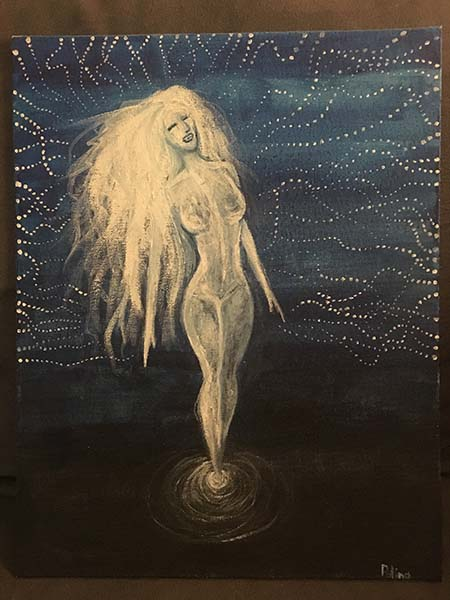

When I draw or paint it completely frees my mind and relaxes me. I focus on my art piece and forget about everything bad that could be on my mind.
It is a way to distract myself from daily routine and let my mind be free, explore, dream and create something only for myself. I feel very happy when I draw. It is fun, good and healthy way to spend free time.
I like painting an drawing in different styles. There many things that inspire me. Like animals, nature, fantasy creatures and different subjects overall.
